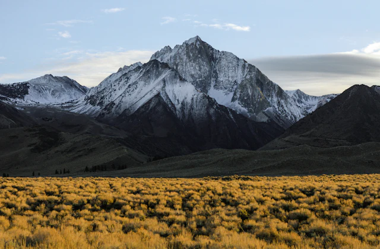
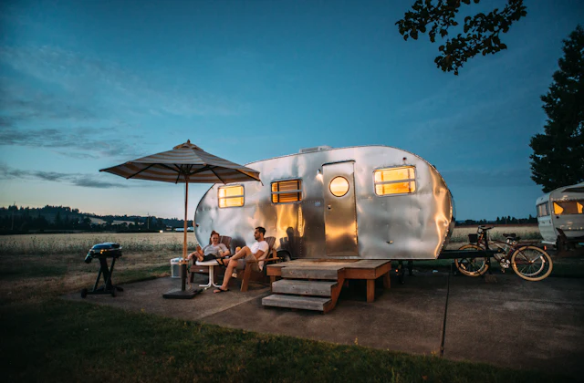
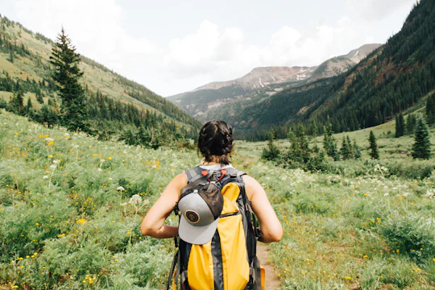
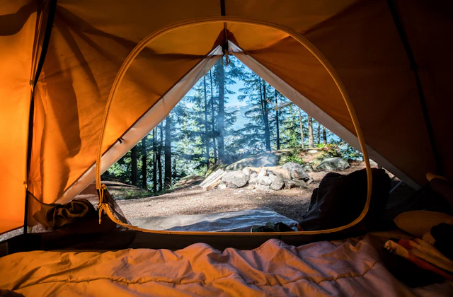
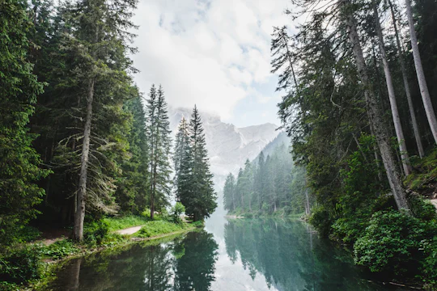
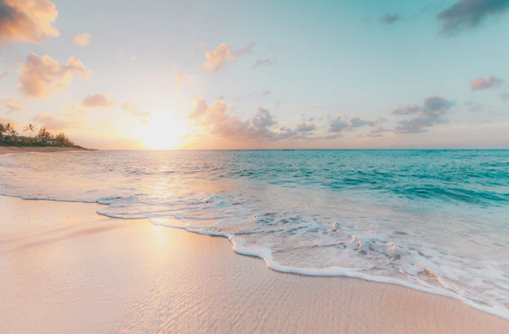
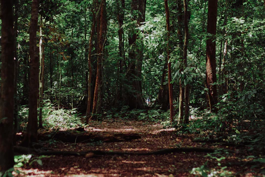

Firsthand expedition dispatches, survival philosophies, gear test field reports, and technical mountain guides written by seasoned wilderness explorers.

Featured Expedition
EXPEDITION DISPATCH•14 MIN READ•OCT 24, 2026
Traversing the Continental Divide: 14 Days Above Tree Line
Scaling sheer granite knife-edges at 13,800 feet, Marcus Thorne recounts an unforgiving autumn expedition testing next-generation geodesic ultralight shelters through unseasonal sub-zero blizzards.
Marcus ThorneChief Expedition Officer
CURATED TOPICS
Explore Blog Categories
Filter field dispatches by adventure discipline to find guides tailored to your next expedition.
FIELD JOURNAL
Latest Outdoor Stories

CAMPING
6 min read • Sep 28, 2026
Essential Camping Tips for Beginners
How to choose a level campsite, pitch tensioned guylines against wind, and establish clean camp kitchen protocols.
DESTINATIONS
9 min read • Oct 02, 2026
Top 10 Mountain Destinations for 2027
From the remote jagged spires of the Wind River Range to the turquoise tarns of the North Cascades.

TREKKING
8 min read • Oct 10, 2026
How to Prepare for Your First Trek
Weight distribution ratios, blister prevention strategies, and packing essentials to maintain a base weight under 18 lbs.

EQUIPMENT
11 min read • Oct 15, 2026
Best Camping Equipment for Explorers
Our lab team breaks down ultralight shelters, multi-fuel inverted canister stoves, and Gore-Tex waterproofing.

FOREST TRAILS
7 min read • Oct 18, 2026
Exploring the Beauty of Forest Trails
Why immersion in ancient old-growth evergreen forests improves cognitive resilience and reduces physiological stress.

CONSERVATION
5 min read • Oct 20, 2026
Sustainable Camping: Leave No Trace
The seven core principles of backcountry stewardship to preserve pristine wilderness ecosystems for future generations.

NAVIGATION
10 min read • Oct 22, 2026
Navigation: Mastering Map & Compass
When batteries fail in freezing temperatures, analog topographic triangulations and magnetic declination adjustments save lives.